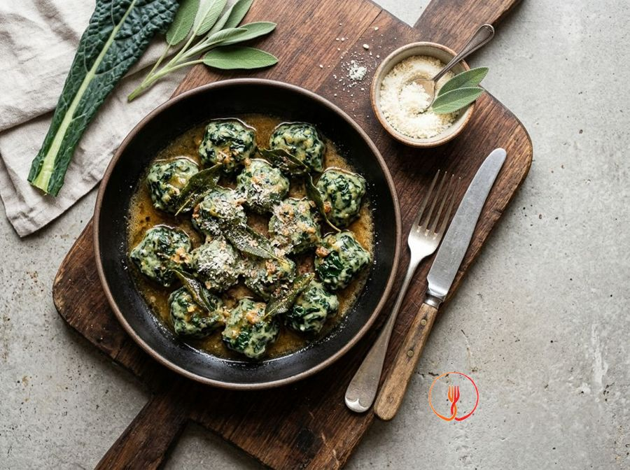

Malfatti al cavolo nero e ricotta con burro alla salvia
Gnocchi nudi realizzati con una base di cavolo nero e ricotta, morbidi e saporiti, conditi con burro nocciola.
Ingredienti
- Cavolo nero (solo foglie)500 g
- Ricotta vaccina ben sgocciolata250 g
- Parmigiano Reggiano grattugiato100 g
- Farina 0080 g
- Uova2
- Noce moscata1 pizzico
- Burro60 g
- Salvia fresca6 foglie
- Sale e pepeq.b.
Allergeni
Glutine, Latte, Uova
Procedimento
- Inizia pulendo 500 g di foglie di cavolo nero, eliminando la costa centrale coriacea con un coltello o sfilandola a mano. Immergi le foglie in una pentola capiente con acqua bollente leggermente salata e lasciale cuocere a fiamma vivace per circa 10 minuti finché non risulteranno tenere. Una volta pronte, scola il cavolo e lascialo raffreddare completamente prima di strizzarlo con estrema forza tra le mani per eliminare ogni traccia d'acqua residua. Il risultato deve essere una palla di verdura compatta e quasi asciutta al tatto, fondamentale per la riuscita dell'impasto. Consiglio dello chef: strizzare bene il cavolo è il segreto per non dover aggiungere troppa farina in seguito, mantenendo i malfatti soffici come nuvole.
- Prendi il cavolo nero ben strizzato e tritalo finemente utilizzando un coltello ben affilato su un tagliere, oppure usa un mixer azionandolo a brevi impulsi per pochi secondi. Non devi assolutamente frullarlo fino a ridurlo in crema, ma ottenere dei pezzettini piccoli e regolari che daranno la giusta consistenza e struttura al piatto. Noterai che il trito avrà un colore verde scuro intenso e un profumo erbaceo caratteristico. Consiglio dello chef: se decidi di usare il mixer, assicurati che le lame siano fredde e non azionarle troppo a lungo per evitare di ossidare la verdura e comprometterne il colore brillante.
- In una ciotola capiente, unisci il cavolo tritato a 250 g di ricotta vaccina ben sgocciolata, 2 uova intere e 100 g di Parmigiano Reggiano grattugiato. Aggiungi un generoso pizzico di noce moscata grattugiata al momento, sale e pepe secondo il tuo gusto, quindi amalgama il tutto con una spatola usando movimenti circolari e costanti. L'impasto dovrà apparire cromaticamente omogeneo, con il bianco della ricotta punteggiato uniformemente dal verde del cavolo. Consiglio dello chef: se la ricotta dovesse risultare troppo umida, lasciala scolare in un colino a maglie fini in frigorifero per almeno un paio d'ore prima di iniziare la preparazione.
- Setaccia 80 g di farina 00 direttamente sopra il composto di ricotta e verdura e incorporala gradualmente mescolando con delicatezza dal basso verso l'alto. Lavora l'impasto a temperatura ambiente solo per il tempo strettamente necessario a far sparire le tracce bianche della farina, evitando di scaldarlo troppo con le mani. Otterrai una massa densa, leggermente appiccicosa ma capace di mantenere bene la forma se prelevata con un cucchiaio. Consiglio dello chef: non cedere alla tentazione di aggiungere altra farina oltre alla dose indicata, altrimenti i tuoi malfatti diventeranno gommosi invece di sciogliersi in bocca.
- Prepara un vassoio leggermente infarinato e inizia a formare i malfatti prelevando piccole porzioni di impasto grandi circa come una noce. Puoi usare la tecnica delle 'quenelle' utilizzando due cucchiai bagnati oppure far roteare l'impasto tra i palmi delle mani leggermente infarinati per ottenere delle palline irregolari. Cerca di mantenere una dimensione uniforme per tutti i pezzi così da garantire una cottura simultanea e perfetta in pentola. Consiglio dello chef: tieni le mani sempre leggermente infarinate o umide durante questo passaggio per evitare che il composto si attacchi eccessivamente alle dita.
- In un'ampia padella antiaderente, sciogli 60 g di burro insieme a 6 foglie di salvia fresca lavate e asciugate, mantenendo una fiamma medio-bassa. Lascia sfrigolare dolcemente per circa 4-5 minuti finché il burro non smette di sibilare, inizia a schiumare e assume un colore nocciola chiaro con un profumo tostato. Fai attenzione a non bruciare la salvia, che deve diventare croccante pur mantenendo il suo colore verde bosco. Consiglio dello chef: il cosiddetto 'burro nocciola' (beurre noisette) aggiunge una nota di frutta secca che esalta incredibilmente la dolcezza della ricotta e il sapore del cavolo.
- Porta a bollore una pentola capiente con abbondante acqua salata e abbassa leggermente la fiamma in modo che il bollore sia costante ma non troppo turbolento per non rompere gli gnocchi. Tuffa delicatamente i malfatti pochi alla volta, evitando di affollare la pentola per non abbassare bruscamente la temperatura dell'acqua. Quando saliranno a galla, solitamente dopo 2-3 minuti, lasciali cuocere per altri 30 secondi esatti per assicurarvi che il calore arrivi uniformemente al cuore del malfatto. Consiglio dello chef: usa una schiumarola per muoverli il meno possibile, poiché la loro struttura è estremamente delicata finché non sono completamente cotti.
- Preleva i malfatti cotti con la schiumarola e trasferiscili direttamente nella padella con il burro alla salvia, mantenendo il fuoco al minimo. Muovi la padella con un movimento rotatorio delicato per nappare ogni singolo gnocchetto con il condimento dorato, aggiungendo se necessario un cucchiaio di acqua di cottura per creare una leggera emulsione. Servi immediatamente i piatti ben caldi, guarnendo con le foglie di salvia croccanti e un'ultima spolverata di Parmigiano Reggiano. Consiglio dello chef: non usare mai il cucchiaio per mescolare i malfatti in padella, ma falli 'saltare' con un colpo di polso per preservare la loro forma e morbidezza.
Valori nutrizionali (stima)
| Per porzione (215 g) | Per 100 g | |
|---|---|---|
| Energia | 1895 kJ / 453 kcal | 883 kJ / 211 kcal |
| Proteine | 23 g | 11 g |
| Carboidrati | 22 g | 10 g |
| di cui zuccheri | 3.5 g | 1.6 g |
| Grassi | 30 g | 14 g |
| di cui saturi | 18 g | 8.6 g |
| Fibre | 4.3 g | 2.0 g |
| Sale | 0.9 g | 0.4 g |
Valori stimati con l'AI su dati medi CREA / USDA: sono indicativi e non sostituiscono il parere di un medico o di un nutrizionista.
Apri la ricetta nell'app per la lista della spesa, le schede ingredienti e i negozi vicini.